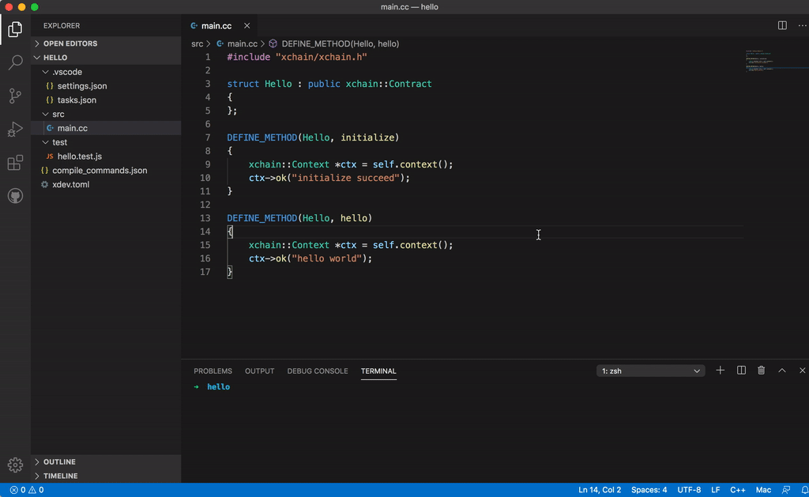
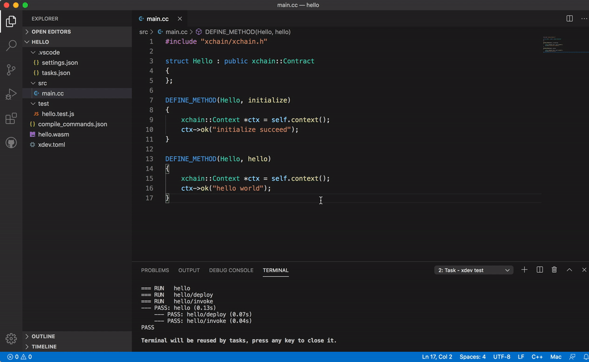
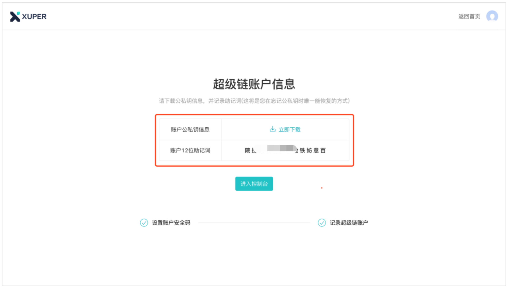
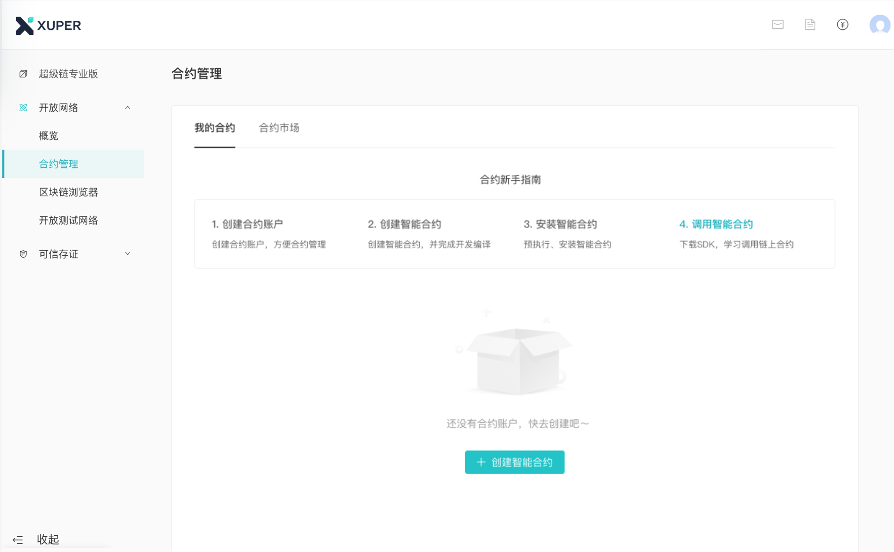
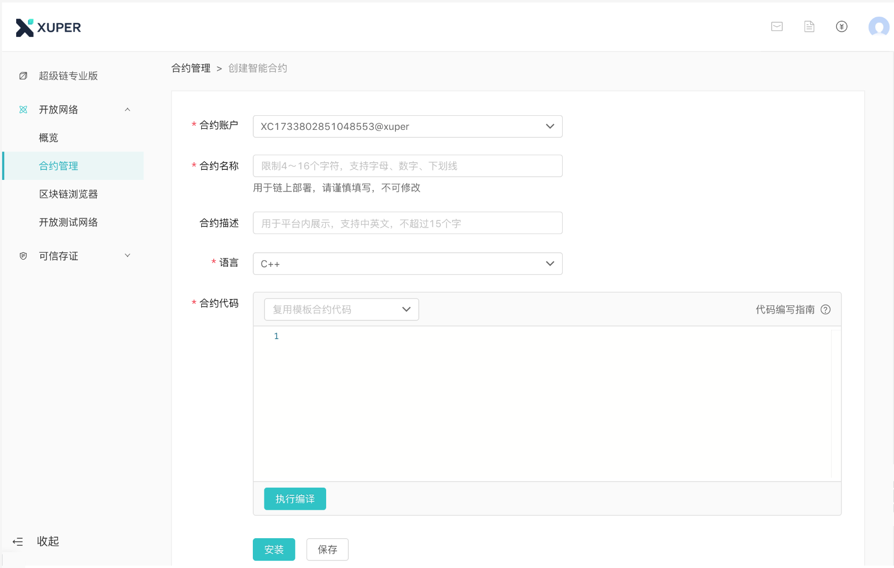

智能合约开发详解¶
简介¶
百度 XuperChain 是一个支持多语言合约的区块链框架，有多种语言来供大家选择使用开发智能合约。目前 XuperChain 的智能合约可以使用solidity、c++、go以及 java语言来编写，solidity为EVM合约，c++和go 支持 wasm合约，go和java支持native合约。solidity合约应用最为广泛，完美兼容以太坊开源社区以及相关开发工具，c++合约合约性能会更好些，go合约在易用性上更好，java合约的开发者会更多些。大家可以根据需要选择自己喜欢的语言来编写智能合约，这篇文章会通过一步步的指引来帮助大家使用solidity、c++、go或者java来编写 XuperChain 的智能合约，在阅读完文章后，希望大家对如何编写，部署和测试 XuperChain 的智能合约有初步的认识。
或使用 XuperChain XuperOS，支持合约可视化管理、在线上链。 点击了解
准备工作¶
环境要求¶
目前 XuperChain 节点主要运行在linux和mac上，windows不能运行 XuperChain 节点。
go >= 1.12.x && <= 1.13.x
g++ >= 4.8.2 或者 clang++ >= 3.3
Docker
下载编译xuperchain¶
智能合约只有部署到链上才能运行，因此我们首先要编译并启动xuperchain节点。
如果需要使用特定分支，使用git checkout来切换特定分支，如 **git checkout v3.7**
1$ cd $HOME
2$ git clone https://github.com/xuperchain/xuperchain.git xuperchain
3$ cd xuperchain && make
设置环境变量¶
这些环境变量有助于我们更方便的执行一些命令而不用指定命令的全路径。
1export PATH=$HOME/xuperchain/output:$PATH
2export XDEV_ROOT=$HOME/xuperchain/core/contractsdk/cpp
启动xuperchain¶
–vm ixvm参数是选择ixvm合约虚拟机，开发合约过程中使用ixvm虚拟机能加快合约部署
1$ cd output
2## 首先创建链
3$ ./xchain-cli createChain
4## 后台启动xuperchain节点
5$ nohup ./xchain --vm ixvm &
创建合约账号¶
合约账号用来进行合约管理，比如合约的权限控制等，要部署合约必须创建合约账号，同时合约账号里面需要有充足的xuper来部署合约。
创建合约账号XC1111111111111111@xuper.
1$ ./xchain-cli account new --account 1111111111111111 --fee 2000
2contract response:
3 {
4 "pm": {
5 "rule": 1,
6 "acceptValue": 1.0
7 },
8 "aksWeight": {
9 "dpzuVdosQrF2kmzumhVeFQZa1aYcdgFpN": 1.0
10 }
11 }
12The gas you cousume is: 1000
13The fee you pay is: 2000
14Tx id: d62704970705a2682e2bd2c5b4f791065871fd45f64c87815b91d8a00039de35
15account name: XC1111111111111111@xuper
给合约账号转账
1$ ./xchain-cli transfer --to XC1111111111111111@xuper --amount 100000000
2cd26657006f6f75f07bd53ad0a7fe74d76985cd592542d8cc87dc3fcdde115f5
小结¶
至此我们完成了所有的准备工作，包括编译xuperchain，创建链，启动节点，创建合约账号，后面我们开始体验怎么编译，部署和调用智能合约。
快速体验¶
在开始编写智能合约之前首先通过一个简单的例子来给大家演示合约是如何从代码到字节码，以及如何部署到链上，如何发起对智能合约的调用。 我们使用一个c++合约为例来展示如何编译、部署、调用合约。
创建合约工程¶
xdev工具是随xuperchain发布的一个合约编译和测试工具，在编译完xuperchain之后生成在output目录。
xdev提供了一个默认的c++合约工程模板
1$ xdev init hello-cpp
这个命令创建了一个hello-cpp的合约工程
编译合约¶
第一次编译的时间会长一点，因为xdev需要下载编译器镜像，以及编译 XuperChain 的标准库。
1$ xdev build -o hello.wasm
2CC main.cc
3LD wasm
编译结果为hello.wasm，后面我们使用这个文件来部署合约
部署合约¶
1$ ./xchain-cli wasm deploy --account XC1111111111111111@xuper --cname hello --fee 5200000 --runtime c ./hello-cpp/hello.wasm
2contract response: initialize succeed
3The gas you cousume is: 151875
4The fee you pay is: 5200000
5Tx id: 8c33a91c5cf564a28e7b62cad827ba91e19abf961702659dd8b70a3fb872bdf1
此命令看起来很长，但是其中很多参数都有默认值，我们先来看一下参数的含义：
wasm deploy ：此为部署wasm合约的命令参数，不做过多解释
–account XC1111111111111111@xuper ：此为部署wasm合约的账号（只有合约账号才能进行合约的部署）
–cname hello ：这里的hello是指部署后在链上的合约名字，可以自行命名（但有规则，长度在4～16字符）
–runtime c 指明我们部署的是一个c++代码编译的合约，如果是go合约这里填 go 即可。
–fee 为我们部署这个合约所需要的xuper
最后的hello.wasm是合约编译好的文件
调用合约¶
1$ ./xchain-cli wasm invoke --method hello --fee 110000 hello
2contract response: hello world
3The gas you cousume is: 35
4The fee you pay is: 110000
5Tx id: d8989ad1bfd2d08bd233b7a09a544cb07976fdf3429144c42f6166d28e9ff695
参数解释如下：
wasm invoke 表示我们要调用一个合约
–method hello 表示我们要调用合约的 hello 方法
–fee 指明我们这次调用合约花费的xuper
最后的参数指明我们调用的合约名字 hello
小结¶
通过本节的学习，我们快速掌握了如果编译，部署和调用合约，在下面的章节里面我们学些如果使用solidity、c++、go或者java语言来编写智能合约。
合约编写详解¶
XuperChain目前主要支持以太坊solidity合约，两种编译成wasm格式的合约语言， c++ 和 go，以及两种native合约 go 和 java ，合约框架的整体结构是一致的，在不同语言上的表现形式不太一样，但熟悉一种语言的SDK之后很容易迁移到其他语言。
下面大概说明如何编写这四种类型的合约
Solidity合约¶
如果本地搭建 XuperChain 环境，在部署、调用solidity合约之前，请先查看`conf/xchain.yaml` 中evm一节，确保evm合约功能开启。
1# evm合约配置
2evm:
3 driver: "evm"
4 enable: true
编译环境准备¶
安装solc编译器，请参见**https://solidity-cn.readthedocs.io/zh/latest/installing-solidity.html**。
solc --version // solc, the solidity compiler commandline interface // Version: 0.5.9+commit.c68bc34e.Darwin.appleclang // 以上打印说明编译器安装成功
以counter合约为例来看如何编写一个Solidity合约。
合约样例¶
代码在 contractsdk/evm/example/Counter.sol
1pragma solidity >=0.0.0;
2
3contract Counter {
4 address owner;
5 mapping (string => uint256) values;
6
7 constructor() public{
8 owner = msg.sender;
9 }
10
11 function increase(string memory key) public payable{
12 values[key] = values[key] + 1;
13 }
14
15 function get(string memory key) view public returns (uint) {
16 return values[key];
17 }
18
19 function getOwner() view public returns (address) {
20 return owner;
21 }
22
23}
代码¶
solidity合约相关文档请参见 https://github.com/ethereum/solidity 。
更多的Solidity语言合约例子在 XuperChain 项目的 core/contractsdk/evm/example 以及 https://github.com/OpenZeppelin/openzeppelin-contracts 里面寻找。
合约编译¶
Solidity合约使用如下命令来编译合约
1// 通过solc编译合约源码
2solc --bin --abi Counter.sol -o .
3// 合约二进制文件和abi文件分别存放在当前目录下，Counter.bin和Counter.abi
--bin：表示需要生成合约二进制文件--abi：表示需要生成合约abi文件，用于合约方法以及参数编解码-o：表示编译结果输出路径
合约部署¶
Solidity合约部署完整命令如下
1$ ./xchain-cli evm deploy --account XC1111111111111111@xuper --cname counterevm --fee 5200000 Counter.bin --abi Counter.abi
--abi：表示合约abi文件
合约调用¶
1// 合约increase方法调用
2$ ./xchain-cli evm invoke --method increase -a '{"key":"stones"}' counterevm --fee 22787517 --abi Counter.abi
3// 合约get方法调用
4$ ./xchain-cli evm query --method get -a '{"key":"stones"}' counterevm --abi Counter.abi
--abi：表示合约abi文件
C++合约¶
以counter合约为例来看如何编写一个C++合约。
合约样例¶
代码在 contractsdk/cpp/example/counter.cc
1#include "xchain/xchain.h"
2struct Counter : public xchain::Contract {};
3DEFINE_METHOD(Counter, initialize) {
4 xchain::Context* ctx = self.context();
5 const std::string& creator = ctx->arg("creator");
6 if (creator.empty()) {
7 ctx->error("missing creator");
8 return;
9 }
10 ctx->put_object("creator", creator);
11 ctx->ok("initialize succeed");
12}
13DEFINE_METHOD(Counter, increase) {
14 xchain::Context* ctx = self.context();
15 const std::string& key = ctx->arg("key");
16 std::string value;
17 ctx->get_object(key, &value);
18 int cnt = 0;
19 cnt = atoi(value.c_str());
20 char buf[32];
21 snprintf(buf, 32, "%d", cnt + 1);
22 ctx->put_object(key, buf);
23 ctx->ok(buf);
24}
25DEFINE_METHOD(Counter, get) {
26 xchain::Context* ctx = self.context();
27 const std::string& key = ctx->arg("key");
28 std::string value;
29 if (ctx->get_object(key, &value)) {
30 ctx->ok(value);
31 } else {
32 ctx->error("key not found");
33 }
34}
代码解析¶
下面我们逐行解析合约代码：
#include <xchain/xchain.h> 为必须的，里面包含了编写合约所需要的库。
struct Counter : public xchain::Contract {}: 声明了我们的合约类，所有的合约类都要继承自 xchain::Contract 。
DEFINE_METHOD(Counter, initialize) 我们通过 DEFINE_METHOD 来为合约类定义合约方法，在这个例子里面我们为 Counter 类定义了一个叫 initialize 的合约方法。
xchain::Context* ctx = self.context() :用来获取合约的上下文，每个合约都有一个对应的合约执行上下文，通过上下文我们可以获取合约参数，写入合约数据，context对象是我们经常要操作的一个对象。
const std::string& creator = ctx->arg(“creator”); ，用于从合约上下文里面获取合约方法的参数，这里我们获取了名字叫 creator 的合约参数，合约的参数列表是一个map结构, key为合约参数的名字，value为参数对应的用户传递的值。
ctx->put_object(“creator”, creator); 通过合约上下文的 put_object 方法，我们可以向链上写入数据。
ctx->ok(“initialize succeed”); 用于返回合约的执行结果，如果合约执行失败则调用 ctx->error 。
通过上面的代码分析我们得到了如下知识
一个合约有多个方法组成，如counter合约的 initialize ， increase , get 方法。
initialize 是每个合约必须实现的方法，这个合约方法会在部署合约的时候自动执行。
每个合约方法有一个 Context 对象，通过这个对象我们能获取到很多有用的方法，如获取用户参数等。
通过 Context 对象的 ok 或者 error 方法我们能给调用方反馈合约的执行情况:成功或者失败。
更多的c++语言合约例子在 XuperChain 项目的 core/contractsdk/cpp/example 里面寻找。
Go合约¶
以counter合约为例来看如何编写一个go合约。
合约样例¶
代码在 contractsdk/go/example/counter/counter.go
1package main
2import (
3 "strconv"
4 "github.com/xuperchain/xuperchain/core/contractsdk/go/code"
5 "github.com/xuperchain/xuperchain/core/contractsdk/go/driver"
6)
7type counter struct{}
8func (c *counter) Initialize(ctx code.Context) code.Response {
9 creator, ok := ctx.Args()["creator"]
10 if !ok {
11 return code.Errors("missing creator")
12 }
13 err := ctx.PutObject([]byte("creator"), creator)
14 if err != nil {
15 return code.Error(err)
16 }
17 return code.OK(nil)
18}
19func (c *counter) Increase(ctx code.Context) code.Response {
20 key, ok := ctx.Args()["key"]
21 if !ok {
22 return code.Errors("missing key")
23 }
24 value, err := ctx.GetObject(key)
25 cnt := 0
26 if err == nil {
27 cnt, _ = strconv.Atoi(string(value))
28 }
29 cntstr := strconv.Itoa(cnt + 1)
30 err = ctx.PutObject(key, []byte(cntstr))
31 if err != nil {
32 return code.Error(err)
33 }
34 return code.OK([]byte(cntstr))
35}
36func (c *counter) Get(ctx code.Context) code.Response {
37 key, ok := ctx.Args()["key"]
38 if !ok {
39 return code.Errors("missing key")
40 }
41 value, err := ctx.GetObject(key)
42 if err != nil {
43 return code.Error(err)
44 }
45 return code.OK(value)
46}
47func main() {
48 driver.Serve(new(counter))
49}
go合约的整体框架结构跟c++合约一样，在表现形式上稍微有点不一样：
c++合约使用 DEFINE_METHOD 来定义合约方法，go通过结构体方法来定义合约方法。
c++通过 ctx->ok 来返回合约数据，go通过返回 code.Response 对象来返回合约数据。
go合约需要在main函数里面调用 driver.Serve 来启动合约。
更多的go语言合约例子在 XuperChain 项目的 core/contractsdk/go/example 里面寻找。
合约部署¶
1$ ./xchain-cli native deploy --account XC1111111111111111@xuper --cname hello --fee 5200000 --runtime go ./hello-go/hello
Go合约的调用跟c++合约参数一致。
Java合约¶
java合约目前只支持native合约。
如果本地搭建 XuperChain 环境，在部署、调用native合约之前，请先查看`conf/xchain.yaml` 中native一节，确保native合约功能开启。
1# 管理native合约的配置
2native:
3 enable: true
以counter合约为例来看如何编写一个java合约。
编译环境准备¶
编译Java sdk：Java版本不低于Java1.8版本
包管理器：maven，mvn版本3.6+
# 编译java sdk cd contractsdk/java mvn install -f pom.xml # 产出二进制文件target/java-contract-sdk-0.1.0.jar，并自动安装到mvn本地仓库下
合约样例¶
代码在 contractsdk/java/example/counter/src/main/java/com/baidu/xuper/example/Counter.java
1package com.baidu.xuper.example;
2
3import java.math.BigInteger;
4
5import com.baidu.xuper.Context;
6import com.baidu.xuper.Contract;
7import com.baidu.xuper.ContractMethod;
8import com.baidu.xuper.Driver;
9import com.baidu.xuper.Response;
10
11/**
12* Counter
13*/
14public class Counter implements Contract {
15
16 @Override
17 @ContractMethod
18 public Response initialize(Context ctx) {
19 return Response.ok("ok".getBytes());
20 }
21
22 @ContractMethod
23 public Response increase(Context ctx) {
24 byte[] key = ctx.args().get("key");
25 if (key == null) {
26 return Response.error("missing key");
27 }
28 BigInteger counter;
29 byte[] value = ctx.getObject(key);
30 if (value != null) {
31 counter = new BigInteger(value);
32 } else {
33 ctx.log("key " + new String(key) + " not found, initialize to zero");
34 counter = BigInteger.valueOf(0);
35 }
36 ctx.log("get value " + counter.toString());
37 counter = counter.add(BigInteger.valueOf(1));
38 ctx.putObject(key, counter.toByteArray());
39
40 return Response.ok(counter.toString().getBytes());
41 }
42
43 @ContractMethod
44 public Response get(Context ctx) {
45 byte[] key = ctx.args().get("key");
46 if (key == null) {
47 return Response.error("missing key");
48 }
49 BigInteger counter;
50 byte[] value = ctx.getObject(key);
51 if (value != null) {
52 counter = new BigInteger(value);
53 } else {
54 return Response.error("key " + new String(key) + " not found)");
55 }
56 ctx.log("get value " + counter.toString());
57
58 return Response.ok(counter.toString().getBytes());
59 }
60
61 public static void main(String[] args) {
62 Driver.serve(new Counter());
63 }
64}
java合约的整体框架结构跟c++、go合约一样，在表现形式上稍微有点不一样：
c++合约使用 DEFINE_METHOD 来定义合约方法，go通过结构体方法来定义合约方法，java通过定义class类方法来定义合约。
c++通过 ctx->ok 来返回合约数据，go通过返回 code.Response 对象来返回合约数据，java通过 Response.ok 来返回合约数据。
java合约需要在main函数里面调用 Driver.serve 来启动合约。
更多的java语言合约例子在 XuperChain 项目的 core/contractsdk/java/example 里面寻找。
合约编译¶
java合约使用如下命令来编译合约
cd contractsdk/java/example/counter
mvn package -f pom.xml
# 产出二进制文件target/counter-0.1.0-jar-with-dependencies.jar，用于合约部署
合约部署¶
native合约和wasm合约在合约部署和合约执行上通过 native 和 wasm 字段进行区分。
不同语言的合约通过 –runtime 参数进行指定，完整命令如下。
# 部署golang native合约
./xchain-cli native deploy --account XC1111111111111111@xuper --fee 15587517 --runtime java counter-0.1.0-jar-with-dependencies.jar --cname javacounter
--runtime c：表示部署的是c++合约--runtime go：表示部署的是golang合约--runtime java：表示部署的是java合约
java合约的调用跟c++、go合约参数一致。
小结¶
在这个章节里面我们学习了如何使用solidity、c++、go和java语言来编写合约，更多的合约例子可以在对应语言SDK的example目录里面寻找，在下一章节我们学习如果给合约编写单元测试。
合约单测¶
如果每次测试合约都需要部署到链上再发起调用会特别麻烦，xdev工具提供了单测能力，可以脱离链上环境运行合约。
test目录下放着合约测试文件，文件以 .test.js结尾，可以有多个测试文件。 以hello-cpp目录下的test/hello.test.js为例，文件内容如下:
1var assert = require("assert");
2Test("hello", function (t) {
3 var contract;
4 t.Run("deploy", function (tt) {
5 contract = xchain.Deploy({
6 name: "hello",
7 code: "../hello.wasm",
8 lang: "c",
9 init_args: {}
10 })
11 });
12 t.Run("invoke", function (tt) {
13 resp = contract.Invoke("hello", {});
14 assert.equal(resp.Body, "hello world");
15 })
16})
使用Test函数来定义测试case，hello为测试名字, 匿名js function作为测试的body。 全局对象xchain是我们跟xchain环境打交道的入口，xchain.Deploy用来部署一个合约到xchain环境，返回的contract对象，调用contract.Invoke方法即可调用合约。 Deploy和Invoke方法都是通过抛出异常的方式来处理错误，测试框架会自动捕获错误来结束测试case。t.Run可以定义子测试case。
使用如下命令来启动测试
1$ cd hello-cpp
2$ xdev test # 测试test目录下的所有case
3=== RUN hello
4=== RUN hello/deploy
5=== RUN hello/invoke
6--- PASS: hello (0.11s)
7 --- PASS: hello/deploy (0.07s)
8 --- PASS: hello/invoke (0.02s)
9PASS
VSCode编辑器集成¶
配置编译和测试task¶
为了方便在vscode里面编译和测试合约，在 .vscode/tasks.json 里面添加如下内容
1{
2 // See https://go.microsoft.com/fwlink/?LinkId=733558
3 // for the documentation about the tasks.json format
4 "version": "2.0.0",
5 "tasks": [
6 {
7 "label": "xdev build",
8 "type": "shell",
9 "command": "xdev build -p",
10 "options": {
11 "cwd": "${workspaceFolder}"
12 },
13 "group": {
14 "kind": "build",
15 "isDefault": true
16 }
17 },
18 {
19 "label": "xdev test",
20 "type": "shell",
21 "command": "xdev test",
22 "options": {
23 "cwd": "${workspaceFolder}"
24 }
25 }
26 ]
27}
编译合约¶
Run Build Task(⇧⌘B)来启动构建
跑合约单测¶
调用Run Task命令之后，选择xdev test来触发单元测试
代码补全¶
为了让vscode帮我们自动补全代码，需要做如下配置，在项目的.vscode/settings.json文件里面加上这一个配置
1{
2 "C_Cpp.default.compileCommands": "${workspaceFolder}/compile_commands.json"
3}
之后就能用vscode的自动补全功能了.
开放网络集成环境¶
XuperChain 开放网络是基于百度自研底层技术搭建的区块链基础服务网络，符合中国标准，超级节点遍布全国，区块链网络完全开放，为用户提供区块链快速部署和运行的环境，最低2元钱就用上的区块链服务，让信任链接更加便利。
XuperChain 开放网络为开发者提供了合约开发、编译、部署、管理的一站式可视化集成环境，下面介绍如何在开放网络上开发部署智能合约。
账户注册¶

在 XuperChain 官网 https://xchain.baidu.com/ 使用百度账号登录，如果没有百度账号请先注册。
进入 XuperChain 开放网络控制台，第一次登录的用户，平台会为用户创建区块链账户，请按照创建账户指引文档完成安全码设置，并记录自己的助记词和私钥。
创建合约账户¶

在工作台，选择「开放网络 —> 合约管理」，点击「创建合约账户」
进入创建合约账户页，输入安全码后点击「确认创建」，系统自动生成账户名称后，即创建完毕
合约开发和部署¶

在工作台，选择「开放网络 —> 合约管理」，点击「创建智能合约」
进入新页面，按要求填写基本信息、编辑合约代码，编译成功后点击「安装」，即可进入合约安装(部署)流程。 合约代码编译有两种方式：
模板合约；选择模板后，只需在模板代码中填写相关参数即可（参考模板详情完成参数填写）
自定义合约；在编辑器内完成C++语言的合约编辑即可
进入安装流程，用户需按合约代码完成预执行操作。点击「开始验证」，执行通过会进入安装确认页
模板合约；系统会提供模板的函数，只需填写参数即可（可参考模板详情）
自定义合约；根据页面操作说明，完成函数、参数填写
进入确认安装页，页面显示安装合约预计消耗的余额。点击「安装合约」将合约上链，上链过程需要等待10S左右。安装完成后，在合约管理列表中可看到合约状态变更为‘安装成功’，即该合约已完成安装。
结语¶
通过上面的学习，相信大家已经掌握了如何编写 XuperChain 智能合约的方法，想要更深入了解 XuperChain ，可以通过访问 XuperChain 开源项目 https://github.com/xuperchain/xuperchain 来获取更多的学习资料。